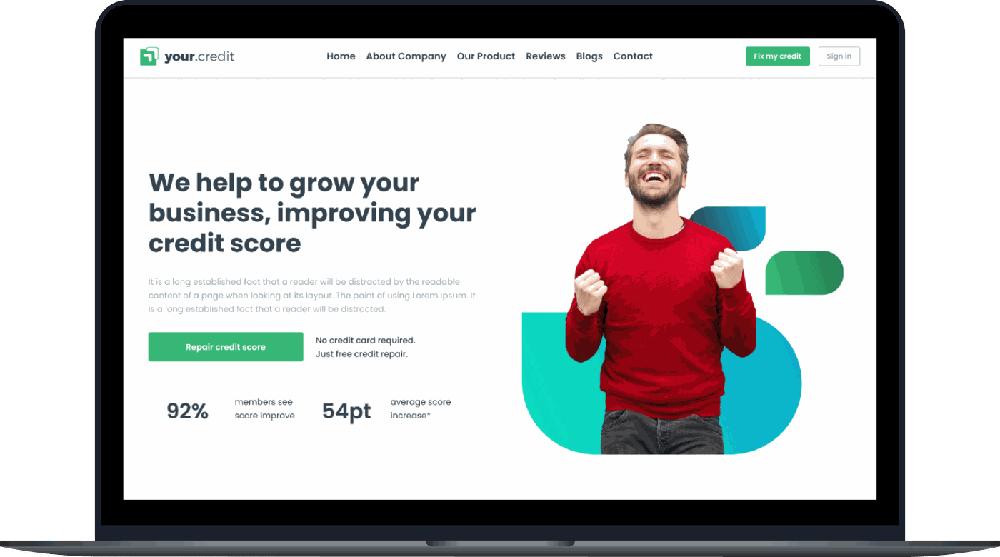

01 — Dashboard
Everything that matters, at a glance
End-to-end product design for your.credit — a consumer platform that turns opaque credit reporting into something people can actually read, question, and fix.

your.credit is a global information and insights company offering credit reporting, risk management, and fraud prevention services. It helps businesses make informed decisions — and helps consumers access the financial products they need with confidence.
As UI/UX designer, I contributed across the full product development cycle — understanding user needs, defining user flows, building wireframes and prototypes, designing the interface, running usability testing, and iterating from feedback. In total: a 30+ screen system covering onboarding, the credit dashboard, full report breakdown, account drill-downs, and the dispute flow.
your.credit is a credit repair and reporting company dedicated to helping people improve their scores and financial standing. Services span credit report analysis, dispute resolution, and personalized improvement plans.
The audience splits into two groups with one shared need: young adults building credit for the first time, and financially engaged consumers actively repairing theirs. In a heavily regulated space, the product also had to feel transparent and compliant at every step — not just legally, but visibly.
Inaccurate credit reporting has real financial consequences — worse mortgage terms, higher borrowing costs, declined loans. Yet the process of catching and disputing those errors is slow, jargon-heavy, and intimidating for most people.
The opportunity: give users a clear, honest view of their credit health, let them flag inaccuracies early, and walk them through disputing errors without needing to understand how the bureaus work behind the scenes.
Wants to improve her credit score ahead of a mortgage application next year, and needs a service tailored to her specific financial situation.
Wants inaccuracies removed from his report to qualify for a car loan at a lower interest rate, with minimal back-and-forth.
Working with a credit repair agency meant every decision — copy tone, how a dispute status was surfaced, even where a reassurance note sat on the page — had to reduce anxiety, not add to it. Across 30+ screens, from the first onboarding step to ongoing dispute tracking, the goal stayed constant: make a confusing financial process legible, and give people real confidence in their own progress.